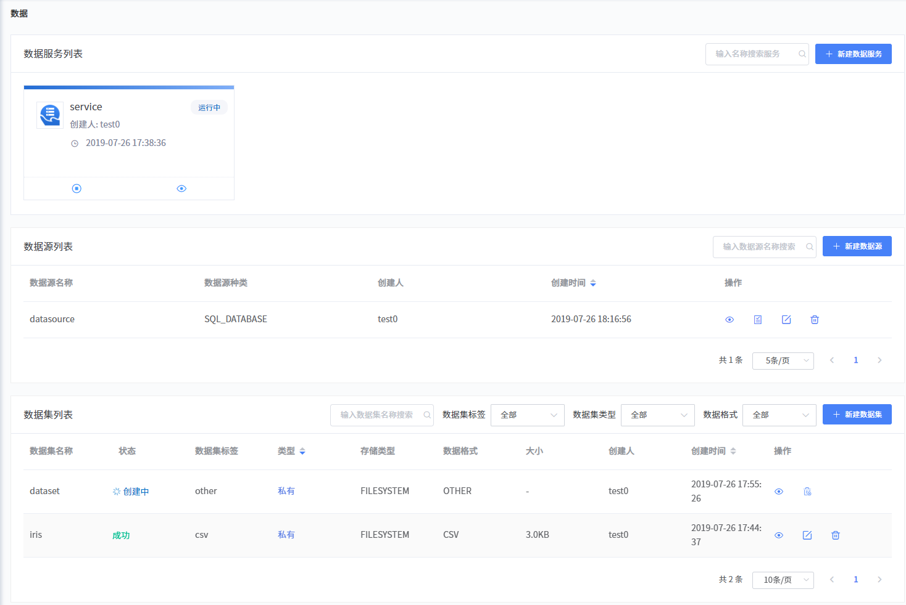
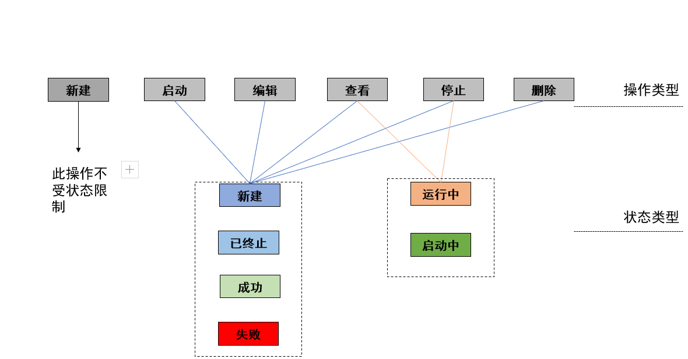

数据
数据页面如下图所示，主要包括如下三个区域。

数据服务列表
该区域以卡片形式展示当前系统所有的数据服务信息，支持的操作与对应的状态关系如下图所示。

数据源列表
该区域以列表形式展示当前系统中所有的数据源信息，支持用户新建、搜索、编辑、测试、查看和删除数据源。
数据源展示的相关字段信息如下表所示。
字段名称 |
字段描述 |
数据源名称 |
展示数据源的名称。 |
数据源种类 |
展示数据源的种类，支持如下几种。
|
创建人 |
展示该数据源的创建人。 |
创建时间 |
展示该数据源的创建时间。 |
操作 |
展示当前数据源支持的操作按钮，不同状态的数据源支持的操作不同。
|
 ：查看详情
：查看详情数据集列表
该区域以列表形式展示当前系统中所有的数据集信息，支持用户新建、搜索、编辑、查看和删除数据集。
数据集展示的相关字段信息如下表所示。
字段名称 |
字段描述 |
数据集名称 |
展示数据集的名称。 |
状态 |
展示数据集的状态，包括如下几种。
|
数据集标签 |
展示该数据集的标签信息，最多支持三个。 |
类型 |
展示该数据集的类型，包括：
|
存储类型 |
展示当前数据集存储时选择的类型，支持如下几种。
|
数据格式 |
展示数据格式，包括如下几种：
|
大小 |
展示数据集的大小。 |
创建人 |
展示数据集的创建人。 |
创建时间 |
展示数据集的创建时间。 支持升序或降序操作。 |
操作 |
展示当前数据集支持的操作按钮，不同状态的数据集支持的操作不同。
|